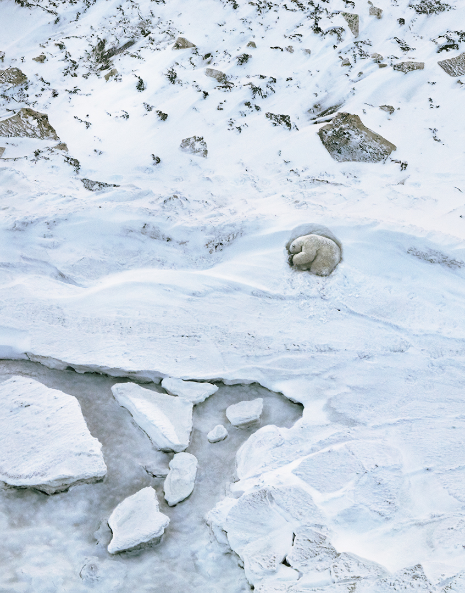

| Animales |
|
|
| Ajolote |
En el axolotl, los aztecas vieron una manifestación del dios Xolotl, quien llevó a las almas al inframundo junto con el sol poniente. Los aztecas veneraban la carne del ajolote (como se le puede nombrar) y atrapaban a las criaturas de la enorme red de canales y lagos que sostenían sus comunidades en el centro de México. Hoy, solo queda una fracción de este sistema acuático, y está siendo contaminado por los fertilizantes, pesticidas, heces y basura de la Ciudad de México. |
 |
| Mandril |
El estilo lo es todo cuando vives en un grupo tan grande como el de un mandril. Con una tropa de 1.300 ejemplares una vez registrada en los bosques de Gabón, se cree que los mandriles forman los grupos sociales más grandes de primates no humanos. Con sus llamativas caras y ojos, han evolucionado para exhibir la coloración más espectacular de cualquier especie de mamífero, cuya intensidad indica su estado social y sexual. Lamentablemente, no es solo su apariencia lo que es atractivo. La carne de mandril se considera un manjar en el oeste de África, y es parte de un comercio en crecimiento, con toneladas de carne de animales silvestres introducidas de contrabando en el oeste de Europa a diario. |
|
| Osos polares |
Los osos polares dependen del hielo marino para atrapar su presa. Se abalanzan sobre las focas cuando emergen a través de sus respiraderos y las acechan mientras toman el sol al aire libre, pero el hielo se está derritiendo a medida que nuestro clima se calienta. |
 |
| Mono dorado de nariz chata |
Localizado a lo largo de las montañas del centro de China, el mono dorado de nariz chata soporta algunos de los inviernos más duros de cualquier primate no humano puede soportar. Su capa de pelo larga y suave lo protege de los vientos helados mientras que su rostro desnudo soporta la mayor parte del frío. Ha sido cazado durante mucho tiempo por su hermoso pelaje, pero desde principios de la década de 1990, la caza furtiva se ha reducido gracias a una mayor protección del gobierno. No obstante, su número ha seguido disminuyendo a medida que se despejaron sus bosques para la obtención de madera y la creación de tierras de cultivo. |
|
| Lémures |
Con una gran pasión por el néctar, se cree que los lémures son los polinizadores más grandes del mundo. A diferencia de la mayoría de los primates, dan a luz a grandes camadas, por lo que prosperan en cautiverio, donde las tasas de supervivencia son altas. Pero debido a que han sido criados a partir de un grupo genético muy pequeño, las reintroducciones posteriores entrañan muchas complicaciones. Su conservación se logrará cuando simplemente los dejemos en paz en un dosel de selva virgen. |
 |